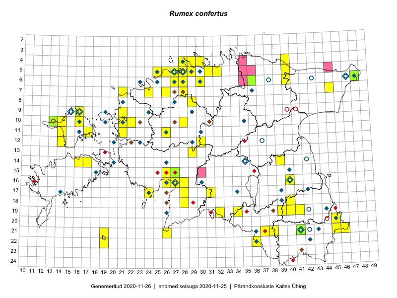

Rumex confertus — hobuoblikas
Polygonaceae :: Rumex confertus Willd. (310)

Kaart põhineb 340 kirjel:
vaatlusi 256
herbaareksemplare 54
PKÜ kirjeid1 22
ELFi kirjeid2 5
LVA kirjeid3 3
Taime kaasaegsed ja ajaloolised leiukohad asuvad 126 ruudus.
Tingmärgid ja leidudega ruutude arvud periooditi uues (u) ja 2005 andmestikus (v)
| █ | vahemik | u4 | v5 |
|---|---|---|---|
| █ | 2006–2020 | 74 | – |
| ◆/◇ | 1971–2005 | 67 | 68 |
| ○ | 1921–1970 | 15 | 10 |
| + | kuni 1920 | 0 | 0 |
| × | hävinud | – | 0 |
| ? | kaheldav | – | 0 |
| Ruut | Leidja(d) | Leiuaeg | Kirje |
|---|---|---|---|
| 06-28 | Toomas Kukk | 2020-07-12 | punkt: Rumex confertus Willd. |
| 07-28 | Ott Luuk | 2020-06-21 | punkt: Rumex confertus Willd. |
| 05-29 | Peedu Saar, Mart Meriste | 2020-06-19 | ruut/ala: Rumex confertus Willd. |
| 10-28 | Terje Villems | 2020-06-06 | punkt: Rumex confertus Willd. |
| 10-21 | Ott Luuk | 2019-09-19 | punkt: Rumex confertus Willd. |
| 10-21 | Vallo Mäemets | 2019-09-07 | LVA: 1515329342 |
| 05-27 | Peedu Saar, Ott Luuk | 2019-09-02 | ruut/ala: Rumex confertus Willd. |
| 05-27 | Ott Luuk, Peedu Saar | 2019-09-02 | punkt: Rumex confertus Willd. |
| 05-28 | Meeli Mesipuu | 2019-06-30 | ruut/ala: Rumex confertus Willd. |
| 05-28 | Meeli Mesipuu | 2019-06-30 | ruut/ala: Rumex confertus Willd. |
| 05-28 | Meeli Mesipuu | 2019-06-30 | ruut/ala: Rumex confertus Willd. |
| 05-28 | Meeli Mesipuu | 2019-06-30 | ruut/ala: Rumex confertus Willd. |
| 05-28 | Meeli Mesipuu | 2019-06-30 | ruut/ala: Rumex confertus Willd. |
| 05-28 | Meeli Mesipuu | 2019-06-30 | ruut/ala: Rumex confertus Willd. |
| 05-27 | Meeli Mesipuu | 2019-06-26 | ruut/ala: Rumex confertus Willd. |
| 05-27 | Meeli Mesipuu | 2019-06-26 | ruut/ala: Rumex confertus Willd. |
| 05-27 | Meeli Mesipuu | 2019-06-26 | ruut/ala: Rumex confertus Willd. |
| 05-28 | Meeli Mesipuu | 2019-06-26 | ruut/ala: Rumex confertus Willd. |
| 05-28 | Meeli Mesipuu | 2019-06-26 | ruut/ala: Rumex confertus Willd. |
| 06-27 | Meeli Mesipuu | 2019-06-22 | ruut/ala: Rumex confertus Willd. |
| 05-27 | Meeli Mesipuu | 2019-06-22 | ruut/ala: Rumex confertus Willd. |
| 05-28 | Kadri Prants | 2019-06-14 | punkt: Rumex confertus Willd. |
| 06-28 | Toomas Kukk | 2019-06-05 | punkt: Rumex confertus Willd. |
| 10-13 | Toomas Kukk, Indrek Tammekänd | 2019-06-02 | TAA0152615: Rumex confertus Willd. |
| 10-13 | Toomas Kukk, Indrek Tammekänd | 2019-06-02 | TAA0152616: Rumex confertus Willd. |
| 16-28 | Indrek Tammekänd | 2019-05-29–2019-08-23 | ruut/ala: Rumex confertus Willd. |
| 05-29 | Ott Luuk | 2019-05-18 | punkt: Rumex confertus Willd. |
| 11-26 | Peedu Saar, Toomas Kukk | 2018-09-20 | punkt: Rumex confertus Willd. |
| 05-25 | Helene Urva | 2018-06-22 | LVA: -1815441582 |
| 21-46 | Rein Kalamees | 2018-06-19 | ruut/ala: Rumex confertus Willd. |
| 16-40 | Peedu Saar | 2018-05-19 | ruut/ala: Rumex confertus Willd. |
| 20-45 | Toomas Kukk, Peedu Saar | 2018-05-16 | punkt: Rumex confertus Willd. |
| 20-45 | Peedu Saar, Toomas Kukk | 2018-05-16 | punkt: Rumex confertus Willd. |
| 11-14 | Peedu Saar, Ott Luuk | 2017-09-13 | punkt: Rumex confertus Willd. |
| 11-14 | Ott Luuk, Peedu Saar | 2017-09-13 | ruut/ala: Rumex confertus Willd. |
| 17-31 | Peedu Saar, Toomas Kukk | 2017-09-06 | punkt: Rumex confertus Willd. |
| 17-31 | Peedu Saar, Toomas Kukk | 2017-09-06 | ruut/ala: Rumex confertus Willd. |
| 05-27 | Timo Luhamäe, Peedu Saar | 2017-08-10 | punkt: Rumex confertus Willd. |
| 11-21 | Ott Luuk, Ilmar Uibopuu | 2017-08-10 | punkt: Rumex confertus Willd. |
| 11-21 | Ilmar Uibopuu, Ott Luuk | 2017-08-10 | ruut/ala: Rumex confertus Willd. |
| 07-24 | Toomas Kukk, Ilmar Uibopuu | 2017-07-30 | punkt: Rumex confertus Willd. |
| 07-21 | Toomas Kukk, Ilmar Uibopuu | 2017-07-28 | punkt: Rumex confertus Willd. |
| 14-39 | Peedu Saar | 2017-07-26 | ruut/ala: Rumex confertus Willd. |
| 14-39 | Peedu Saar | 2017-07-26 | punkt: Rumex confertus Willd. |
| 16-40 | Peedu Saar | 2017-07-10–2017-07-11 | ruut/ala: Rumex confertus Willd. |
| 16-40 | Peedu Saar | 2017-07-10 | punkt: Rumex confertus Willd. |
| 16-40 | Peedu Saar, Ott Luuk | 2017-07-05 | punkt: Rumex confertus Willd. |
| 16-40 | Peedu Saar, Ott Luuk | 2017-07-05 | punkt: Rumex confertus Willd. |
| 05-28 | Toomas Kukk | 2017-07-04 | punkt: Rumex confertus Willd. |
| 05-27 | Toomas Kukk | 2017-06-22 | punkt: Rumex confertus Willd. |
| 05-27 | Toomas Kukk | 2017-06-22 | ruut/ala: Rumex confertus Willd. |
| 16-40 | Ott Luuk | 2017-06-08 | punkt: Rumex confertus Willd. |
| 05-29 | Sander Laherand, Toomas Kukk | 2016-09-29 | punkt: Rumex confertus Willd. |
| 05-32 | Toomas Kukk, Sander Laherand | 2016-08-31 | ruut/ala: Rumex confertus Willd. |
| 05-32 | Sander Laherand, Toomas Kukk | 2016-08-31 | punkt: Rumex confertus Willd. |
| 06-30 | Toomas Kukk, Sander Laherand | 2016-08-30 | ruut/ala: Rumex confertus Willd. |
| 05-31 | Toomas Kukk, Sander Laherand | 2016-08-30 | punkt: Rumex confertus Willd. |
| 05-31 | Sander Laherand, Toomas Kukk | 2016-08-30 | ruut/ala: Rumex confertus Willd. |
| 06-30 | Sander Laherand, Toomas Kukk | 2016-08-30 | punkt: Rumex confertus Willd. |
| 05-29 | Toomas Kukk, Sander Laherand | 2016-08-29 | ruut/ala: Rumex confertus Willd. |
| 10-13 | Sander Laherand, Maret Gerz, Nele Jõessar | 2016-08-10 | punkt: Rumex confertus Willd. |
| 10-13 | Maret Gerz, Sander Laherand | 2016-08-10 | ruut/ala: Rumex confertus Willd. |
| 05-28 | Toomas Kukk, Peedu Saar | 2016-08-03 | ruut/ala: Rumex confertus Willd. |
| 05-28 | Toomas Kukk, Peedu Saar | 2016-08-03 | punkt: Rumex confertus Willd. |
| 04-30 | Sander Laherand, Eerik Leibak | 2016-07-29 | ruut/ala: Rumex confertus Willd. |
| 04-30 | Sander Laherand, Eerik Leibak | 2016-07-29 | punkt: Rumex confertus Willd. |
| 04-28 | Sander Laherand, Tõnu Ploompuu, Nele Jõessar | 2016-07-25 | punkt: Rumex confertus Willd. |
| 04-28 | Sander Laherand, Tõnu Ploompuu, Nele Jõessar | 2016-07-25 | ruut/ala: Rumex confertus Willd. |
| 12-30 | Aat Sarv, Indrek Tammekänd | 2016-07-22 | ruut/ala: Rumex confertus Willd. |
| 12-30 | Aat Sarv, Indrek Tammekänd | 2016-07-22 | punkt: Rumex confertus Willd. |
| 15-27 | Tiit Hallikma, Tõnu Ploompuu | 2016-07-20 | ruut/ala: Rumex confertus Willd. |
| 16-27 | Tiit Hallikma, Tõnu Ploompuu | 2016-07-20 | punkt: Rumex confertus Willd. |
| 15-27 | Tiit Hallikma, Tõnu Ploompuu | 2016-07-20 | punkt: Rumex confertus Willd. |
| 17-28 | Ott Luuk, Liina Oja | 2016-07-20 | ruut/ala: Rumex confertus Willd. |
| 17-28 | Liina Oja, Ott Luuk | 2016-07-20 | punkt: Rumex confertus Willd. |
| 21-26 | Sirje Azarov, Indrek Tammekänd | 2016-07-18 | ruut/ala: Rumex confertus Willd. |
| 21-26 | Indrek Tammekänd, Sirje Azarov | 2016-07-18 | punkt: Rumex confertus Willd. |
| 08-29 | Sander Laherand, Rein Kalamees | 2016-07-08 | ruut/ala: Rumex confertus Willd. |
| 08-29 | Rein Kalamees, Sander Laherand | 2016-07-08 | punkt: Rumex confertus Willd. |
| 15-26 | Indrek Tammekänd | 2016-07-08 | punkt: Rumex confertus Willd. |
| 15-26 | Indrek Tammekänd | 2016-07-08 | ruut/ala: Rumex confertus Willd. |
| 17-24 | Tiit Hallikma, Tõnu Ploompuu | 2016-07-06 | ruut/ala: Rumex confertus Willd. |
| 17-24 | Tiit Hallikma, Tõnu Ploompuu | 2016-07-06 | punkt: Rumex confertus Willd. |
| 05-25 | Toomas Kukk, Sander Laherand | 2016-07-05 | punkt: Rumex confertus Willd. |
| 05-25 | Sander Laherand, Toomas Kukk | 2016-07-05 | ruut/ala: Rumex confertus Willd. |
| 05-26 | Tiina Elvisto, Eerik Leibak | 2016-07-04 | ruut/ala: Rumex confertus Willd. |
| 05-26 | Tiina Elvisto, Eerik Leibak | 2016-07-04 | punkt: Rumex confertus Willd. |
| 07-26 | Jaak-Albert Metsoja, Mari Metsoja | 2016-07-04 | ruut/ala: Rumex confertus Willd. |
| 07-26 | Jaak-Albert Metsoja, Mari Metsoja | 2016-07-04 | punkt: Rumex confertus Willd. |
| 16-27 | Tiit Hallikma, Tõnu Ploompuu | 2016-06-20 | ruut/ala: Rumex confertus Willd. |
| 21-38 | Jaak-Albert Metsoja, Mari Metsoja | 2016-06-17 | punkt: Rumex confertus Willd. |
| 21-38 | Jaak-Albert Metsoja, Mari Metsoja | 2016-06-17 | ruut/ala: Rumex confertus Willd. |
| 21-41 | Sander Laherand, Ott Luuk | 2016-06-16 | punkt: Rumex confertus Willd. |
| 21-41 | Ott Luuk, Sander Laherand | 2016-06-16 | ruut/ala: Rumex confertus Willd. |
| 21-41 | Ott Luuk | 2016-06-16 | TAA0138901: Rumex confertus Willd. |
| 21-41 | Ott Luuk | 2016-06-16 | TAA0138902: Rumex confertus Willd. |
| 21-45 | Toomas Kukk, Tiit Hallikma, Johannes Kõdar | 2016-06-14 | ruut/ala: Rumex confertus Willd. |
| 21-45 | Tiit Hallikma, Toomas Kukk, Johannes Kõdar | 2016-06-14 | punkt: Rumex confertus Willd. |
| 19-40 | Toomas Kukk, Tiit Hallikma, Johannes Kõdar | 2016-06-13 | ruut/ala: Rumex confertus Willd. |
| 19-40 | Tiit Hallikma, Toomas Kukk | 2016-06-13 | punkt: Rumex confertus Willd. |
| 06-28 | Toomas Kukk | 2016-06-06 | ruut/ala: Rumex confertus Willd. |
| 06-27 | Toomas Kukk | 2016-06-06 | ruut/ala: Rumex confertus Willd. |
| 06-28 | Toomas Kukk | 2016-06-06 | punkt: Rumex confertus Willd. |
| 06-27 | Toomas Kukk | 2016-06-06 | punkt: Rumex confertus Willd. |
| 06-28 | Toomas Kukk | 2016-06-02 | ruut/ala: Rumex confertus Willd. |
| 06-28 | Toomas Kukk | 2016-06-02 | punkt: Rumex confertus Willd. |
| 05-28 | Toomas Kukk, Peedu Saar | 2016-06-01 | punkt: Rumex confertus Willd. |
| 05-28 | Peedu Saar | 2016-06-01 | punkt: Rumex confertus Willd. |
| 05-28 | Peedu Saar | 2016-06-01 | ruut/ala: Rumex confertus Willd. |
| 05-29 | Peedu Saar | 2016-05-24 | punkt: Rumex confertus Willd. |
| 16-40 | Peedu Saar | 2016-05-22 | punkt: Rumex confertus Willd. |
| 16-40 | Peedu Saar | 2016-05-22 | ruut/ala: Rumex confertus Willd. |
| 10-16 | Toomas Kukk, Peedu Saar | 2016-05-08 | punkt: Rumex confertus Willd. |
| 10-16 | Toomas Kukk, Peedu Saar | 2016-05-07 | ruut/ala: Rumex confertus Willd. |
| 10-21 | Tõnu Ploompuu | 2015-08-21–2015-08-23 | ruut/ala: Rumex confertus Willd. |
| 10-21 | Tõnu Ploompuu | 2015-08-21–2015-08-23 | punkt: Rumex confertus Willd. |
| 10-22 | Tõnu Ploompuu | 2015-08-21 | ruut/ala: Rumex confertus Willd. |
| 10-22 | Tõnu Ploompuu | 2015-08-21 | punkt: Rumex confertus Willd. |
| 04-29 | Kadi-Liis Kesler, Tiina Elvisto | 2015-08-12 | ruut/ala: Rumex confertus Willd. |
| 04-28 | Kadi-Liis Kesler, Tiina Elvisto | 2015-08-12 | ruut/ala: Rumex confertus Willd. |
| 04-29 | Kadi-Liis Kesler, Tiina Elvisto | 2015-08-12 | punkt: Rumex confertus Willd. |
| 06-27 | Tõnu Ploompuu | 2015-08-11 | ruut/ala: Rumex confertus Willd. |
| 06-27 | Tõnu Ploompuu | 2015-08-11 | punkt: Rumex confertus Willd. |
| 06-27 | Tõnu Ploompuu | 2015-08-11 | punkt: Rumex confertus Willd. |
| 09-16 | Toomas Kukk, Eerik Leibak | 2015-08-11 | ruut/ala: Rumex confertus Willd. |
| 09-16 | Toomas Kukk, Eerik Leibak | 2015-08-11 | punkt: Rumex confertus Willd. |
| 04-28 | Tiina Elvisto, Maria Ksenofontov | 2015-08-09 | ruut/ala: Rumex confertus Willd. |
| 04-28 | Tiina Elvisto, Maria Ksenofontov | 2015-08-09 | punkt: Rumex confertus Willd. |
| 05-25 | Mari Metsoja, Jaak-Albert Metsoja | 2015-07-30 | ruut/ala: Rumex confertus Willd. |
| 11-26 | Hanna-Eliisa Luts, Tõnu Ploompuu | 2015-07-28 | ruut/ala: Rumex confertus Willd. |
| 11-26 | Hanna-Eliisa Luts, Tõnu Ploompuu | 2015-07-28 | punkt: Rumex confertus Willd. |
| 18-40 | Malle Leht | 2015-07-25 | ruut/ala: Rumex confertus Willd. |
| 07-45 | Ott Luuk, Hannes Pehlak | 2015-07-22 | ruut/ala: Rumex confertus Willd. |
| 07-45 | Ott Luuk, Hannes Pehlak | 2015-07-22 | punkt: Rumex confertus Willd. |
| 06-48 | Ott Luuk, Hannes Pehlak | 2015-07-21 | ruut/ala: Rumex confertus Willd. |
| 06-48 | Ott Luuk, Hannes Pehlak | 2015-07-21 | TAA0143004: Rumex confertus Willd. |
| 06-48 | Ott Luuk, Hannes Pehlak | 2015-07-21 | TAA0143005: Rumex confertus Willd. |
| 04-40 | Kaili Orav, Silvia Pihu | 2015-07-21 | ruut/ala: Rumex confertus Willd. |
| 05-40 | Kaili Orav, Silvia Pihu | 2015-07-21 | ruut/ala: Rumex confertus Willd. |
| 05-40 | Kaili Orav, Silvia Pihu | 2015-07-21 | punkt: Rumex confertus Willd. |
| 10-22 | Anneli Palo | 2015-07-21 | LVA: 1831476620 |
| 16-26 | Meeli Mesipuu | 2015-07-18 | ruut/ala: Rumex confertus Willd. |
| 19-41 | Vivika Väli, Ülo Väli | 2015-07-15 | ruut/ala: Rumex confertus Willd. |
| 09-21 | Kadi-Liis Kesler, Tõnu Ploompuu | 2015-07-14 | ruut/ala: Rumex confertus Willd. |
| 06-27 | Toomas Kukk | 2015-07-13 | punkt: Rumex confertus Willd. |
| 19-34 | Silvia Pihu, Illi Tarmu | 2015-07-11 | punkt: Rumex confertus Willd. |
| 19-34 | Silvia Pihu, Illi Tarmu | 2015-07-11 | punkt: Rumex confertus Willd. |
| 19-32 | Maria Abakumova, Tiit Hallikma | 2015-07-11 | ruut/ala: Rumex confertus Willd. |
| 19-32 | Maria Abakumova, Tiit Hallikma | 2015-07-11 | punkt: Rumex confertus Willd. |
| 14-16 | Meeli Mesipuu | 2015-07-10 | ruut/ala: Rumex confertus Willd. |
| 14-17 | Meeli Mesipuu, Kadri Tali | 2015-07-08 | ruut/ala: Rumex confertus Willd. |
| 19-39 | Malle Leht | 2015-07-08 | ruut/ala: Rumex confertus Willd. |
| 16-40 | Thea Kull | 2015-07-07 | ruut/ala: Rumex confertus Willd. |
| 22-19 | Silvia Pihu | 2015-07-03 | ruut/ala: Rumex confertus Willd. |
| 21-19 | Silvia Pihu | 2015-07-03 | punkt: Rumex confertus Willd. |
| 21-37 | Silvia Pihu | 2015-06-28 | ruut/ala: Rumex confertus Willd. |
| 21-37 | Silvia Pihu | 2015-06-28 | punkt: Rumex confertus Willd. |
| 22-36 | Silvia Pihu | 2015-06-27 | ruut/ala: Rumex confertus Willd. |
| 22-36 | Silvia Pihu | 2015-06-27 | punkt: Rumex confertus Willd. |
| 16-26 | Meeli Mesipuu | 2015-06-27 | ruut/ala: Rumex confertus Willd. |
| 05-28 | Erkki Otsman, Sergei Smirnov | 2015-06-26–2015-07-06 | ruut/ala: Rumex confertus Willd. |
| 12-14 | Eeva-Maria Jeletsky, Tarmo Niitla | 2015-06-25 | punkt: Rumex confertus Willd. |
| 12-14 | Eeva-Maria Jeletsky, Tarmo Niitla | 2015-06-25 | ruut/ala: Rumex confertus Willd. |
| 06-27 | Toomas Kukk | 2015-06-19–2015-07-13 | ruut/ala: Rumex confertus Willd. |
| 16-27 | Meeli Mesipuu | 2015-06-17 | ruut/ala: Rumex confertus Willd. |
| 10-14 | Thea Kull | 2015-06-14 | ruut/ala: Rumex confertus Willd. |
| 06-28 | Tõnu Ploompuu | 2015-06-06 | ruut/ala: Rumex confertus Willd. |
| 06-28 | Tõnu Ploompuu | 2015-06-06 | punkt: Rumex confertus Willd. |
| 11-17 | Peedu Saar, Toomas Kukk | 2015-05-28 | ruut/ala: Rumex confertus Willd. |
| 11-17 | Peedu Saar, Toomas Kukk | 2015-05-28 | punkt: Rumex confertus Willd. |
| 09-16 | Toomas Kukk, Peedu Saar | 2015-05-27 | punkt: Rumex confertus Willd. |
| 09-16 | Peedu Saar, Toomas Kukk | 2015-05-27 | ruut/ala: Rumex confertus Willd. |
| 04-29 | Kadi-Liis Kesler, Tiina Elvisto | 2015-05-27 | ruut/ala: Rumex confertus Willd. |
| 04-29 | Kadi-Liis Kesler, Tiina Elvisto | 2015-05-27 | punkt: Rumex confertus Willd. |
| 10-16 | Peedu Saar, Toomas Kukk | 2015-05-26–2017-05-27 | ruut/ala: Rumex confertus Willd. |
| 10-16 | Toomas Kukk, Peedu Saar | 2015-05-26 | punkt: Rumex confertus Willd. |
| 18-28 | Peedu Saar, Liina Oja | 2015-05-20 | ruut/ala: Rumex confertus Willd. |
| 18-28 | Peedu Saar, Liina Oja | 2015-05-20 | punkt: Rumex confertus Willd. |
| 16-27 | Indrek Tammekänd | 2015-05-13–2015-09-15 | ruut/ala: Rumex confertus Willd. |
| 05-28 | Kadi-Liis Kesler, Tiina Elvisto | 2015-05-12–2015-06-05 | ruut/ala: Rumex confertus Willd. |
| 05-29 | Kadi-Liis Kesler, Tiina Elvisto | 2015-05-12–2015-05-29 | ruut/ala: Rumex confertus Willd. |
| 05-29 | Kadi-Liis Kesler, Tiina Elvisto | 2015-05-12 | punkt: Rumex confertus Willd. |
| 16-26 | Indrek Tammekänd | 2015-05-11–2015-07-27 | ruut/ala: Rumex confertus Willd. |
| 13-29 | Liina Oja, Ott Luuk | 2015-05-09 | ruut/ala: Rumex confertus Willd. |
| 10-21 | Tõnu Ploompuu | 2015-05-02 | ruut/ala: Rumex confertus Willd. |
| 06-40 | Thea Kull, Meeli Mesipuu, Eerik Leibak | 2014-07-11 | ruut/ala: Rumex confertus Willd. |
| 11-26 | Toomas Kukk | 2014-06-11 | ruut/ala: Rumex confertus Willd. |
| 16-27 | Meeli Mesipuu | 2013-09-14 | PKÜ: 20140 |
| 16-27 | Meeli Mesipuu | 2013-09-14 | PKÜ: 20142 |
| 16-26 | Meeli Mesipuu | 2013-09-14 | PKÜ: 20133 |
| 16-27 | Meeli Mesipuu | 2013-08-06 | PKÜ: 20088 |
| 05-29 | Peedu Saar, Sander Laherand | 2013-07-07 | ruut/ala: Rumex confertus Willd. |
| 04-35 | Meeli Mesipuu | 2011-08-31 | PKÜ: 17045 |
| 05-29 | Jane Toomla | 2009-06-20 | ELF: 10790 |
| 15-30 | Meeli Mesipuu, Jaak-Albert Metsoja | 2008-08-15 | PKÜ: 14818 |
| 05-45 | Toomas Kukk, Tanel Kosk | 2007-08-23 | PKÜ: 13985 |
| 05-29 | Toomas Kukk | 2006-08-21 | PKÜ: 12618 |
| 05-35;05-36 | Silvia Pihu, Raul Pihu | 2006-08-09 | PKÜ: 13589 |
| 06-35 | Silvia Pihu, Raul Pihu | 2006-07-22 | PKÜ: 13046 |
| 06-36 | Toomas Kukk | 2006-07-19 | TAA0091310: Rumex confertus Willd. |
| 06-36 | Toomas Kukk | 2006-07-19 | TAA0091311: Rumex confertus Willd. |
| 15-27 | Olev Abner | 2006-07-04 | TALL C010778: Rumex confertus Willd. |
| 09-16 | Toomas Kukk | 2005-07-13 | TAA0091312: Rumex confertus Willd. |
| 09-16 | Toomas Kukk | 2005-07-13 | TAA0091313: Rumex confertus Willd. |
| 16-40 | Toomas Kukk | 2005-07-04 | TAA0091314: Rumex confertus Willd. |
| 16-40 | Toomas Kukk | 2005-07-04 | TAA0091315: Rumex confertus Willd. |
| 16-40 | Toomas Kukk | 2005-07-04 | TAA0091316: Rumex confertus Willd. |
| 12-22;12-23 | Oliver Parrest, Jaak-Albert Metsoja | 2005-06-15 | PKÜ: 12291 |
| 19-38 | Malle Leht, Raivo Leht | 2003-07-31 | PKÜ: 11272 |
| 19-38 | Malle Leht, Raivo Leht | 2003-07-24 | PKÜ: 11203 |
| 10-31 | Urmas Laansoo, Eerik Leibak | 2001-09-03 | PKÜ: 7413 |
| 05-29 | Toomas Kukk | 2001-08-23 | PKÜ: 8386 |
| 05-29 | Toomas Kukk | 2001-08-23 | PKÜ: 8389 |
| 10-27 | Toomas Kukk, Bert Holm | 2001-08-15 | PKÜ: 7167 |
| 15-18 | Toomas Kukk | 2001–2005 | ruut/ala: Rumex confertus Willd. |
| 08-27 | Eerik Leibak | 2000-08-17 | TAA0091329: Rumex confertus Willd. |
| 07-27;07-28 | Eerik Leibak | 2000-08-17 | PKÜ: 2739 |
| 04-28 | Thea Kull | 2000-08-10 | ruut/ala: Rumex confertus Willd. |
| 23-41 | Ülle Reier, Priit Holtsmann | 2000-08-09 | PKÜ: 6846 |
| 06-47 | Tõnu Ploompuu | 2000-07-31 | punkt: Rumex confertus Willd. |
| 12-23 | Tõnu Ploompuu | 2000-07-10–2000-07-15 | ruut/ala: Rumex confertus Willd. |
| 18-26 | Malle Leht, Aivo Lepp | 2000-07-05 | PKÜ: 4856 |
| 17-26 | Malle Leht, Aivo Lepp | 2000-07-05 | PKÜ: 4947 |
| 10-35 | Thea Kull, Malle Leht | 2000-05-09 | ruut/ala: Rumex confertus Willd. |
| 06-27 | Tõnu Ploompuu | 2000–2003 | ruut/ala: Rumex confertus Willd. |
| 10-23 | Tõnu Ploompuu | 1999-10-11 | PKÜ: 481 |
| 20-45 | Tõnu Ploompuu | 1999-08-24–1999-08-27 | ruut/ala: Rumex confertus Willd. |
| 17-14 | Toomas Kukk | 1999-07-03 | ruut/ala: Rumex confertus Willd. |
| 15-40 | Toomas Kukk | 1999-06-21 | ruut/ala: Rumex confertus Willd. |
| 14-20 | Toomas Kukk | 1999-06-14–1999-06-17 | ruut/ala: Rumex confertus Willd. |
| 05-25 | Tõnu Ploompuu | 1999–2005 | punkt: Rumex confertus Willd. |
| 09-24 | Tõnu Ploompuu | 1999–2003 | ruut/ala: Rumex confertus Willd. |
| 06-48 | Malle Leht | 1998-07-22 | ruut/ala: Rumex confertus Willd. |
| 16-27 | Toomas Kukk | 1998-07-05–1998-07-08 | ruut/ala: Rumex confertus Willd. |
| 16-26 | Toomas Kukk | 1998-07-03–1998-07-08 | ruut/ala: Rumex confertus Willd. |
| 18-39 | Malle Leht | 1998-07 | ruut/ala: Rumex confertus Willd. |
| 19-26 | Toomas Kukk, Tõnu Ploompuu | 1998-06-27–1998-06-28 | ruut/ala: Rumex confertus Willd. |
| 17-39 | Malle Leht | 1998-05-31 | ruut/ala: Rumex confertus Willd. |
| 06-25 | Tõnu Ploompuu | 1998 | ruut/ala: Rumex confertus Willd. |
| 07-29;07-30 | Arne Kivistik | 1997-07-17 | ELF: 1207 |
| 06-30;07-30 | Arne Kivistik | 1997-06-12 | ELF: 1208 |
| 17-14 | Toomas Kukk, Elle Roosaluste | 1995-08-16 | ruut/ala: Rumex confertus Willd. |
| 22-42 | M. Leht | 1995 | ruut/ala: Rumex confertus Willd. |
| 05-28 | Toomas Kukk | 1994-08 | ruut/ala: Rumex confertus Willd. |
| 06-28 | Toomas Kukk | 1993-08-03–1994-05-28 | ruut/ala: Rumex confertus Willd. |
| 14-20 | Urmas Tokko | 1993-07-29 | ELF: 1483 |
| 13-19 | Urmas Tokko | 1993-07-19 | ELF: 1929 |
| 10-19 | Toomas Kukk, Elle Roosaluste, Mare Leis, Thea Kull | 1993-06–1998-09-21 | ruut/ala: Rumex confertus Willd. |
| 05-28 | Toomas Kukk | 1992-08-02–1994-05-27 | ruut/ala: Rumex confertus Willd. |
| 05-28 | Toomas Kukk | 1992-08-02 | ruut/ala: Rumex confertus Willd. |
| 05-28 | Toomas Kukk | 1992-08-01–1994-05-27 | ruut/ala: Rumex confertus Willd. |
| 05-29 | Toomas Kukk | 1992-08-01 | TAA0091334: Rumex confertus Willd. |
| 05-29 | Toomas Kukk | 1992-08-01 | TAA0091335: Rumex confertus Willd. |
| 05-29 | Toomas Kukk | 1992-08-01 | TAA0091336: Rumex confertus Willd. |
| 06-28 | Toomas Kukk | 1992-07-30 | ruut/ala: Rumex confertus Willd. |
| 05-27 | Toomas Kukk | 1992-07-29 | ruut/ala: Rumex confertus Willd. |
| 05-28 | Toomas Kukk | 1992-07-29 | ruut/ala: Rumex confertus Willd. |
| 05-28 | Toomas Kukk | 1992-07-27 | ruut/ala: Rumex confertus Willd. |
| 05-28 | Toomas Kukk | 1992-07-27 | ruut/ala: Rumex confertus Willd. |
| 05-28 | Toomas Kukk | 1992-07-27 | ruut/ala: Rumex confertus Willd. |
| 05-28 | Toomas Kukk | 1992-07-23 | ruut/ala: Rumex confertus Willd. |
| 05-29 | Toomas Kukk | 1992-06-21–1994-05-27 | ruut/ala: Rumex confertus Willd. |
| 06-23 | Tõnu Ploompuu | 1992–1999 | ruut/ala: Rumex confertus Willd. |
| 05-29 | Toomas Kukk | 1991-08-10–1997-08-21 | ruut/ala: Rumex confertus Willd. |
| 05-28 | Toomas Kukk | 1991-08-04 | ruut/ala: Rumex confertus Willd. |
| 05-29 | Heinrich Aasamaa | 1990-07-26 | ruut/ala: Rumex confertus Willd. |
| 05-28 | Toomas Kukk | 1990-05-20–1992-07-23 | ruut/ala: Rumex confertus Willd. |
| 05-29 | H. Aasamaa | 1989-07-27 | TAM0125833: Rumex confertus Willd. |
| 05-30 | Lemmi Jõe | 1989-07-18 | TAM0025956: Rumex confertus Willd. |
| 16-30 | Ü. Niinemets | 1989 | ruut/ala: Rumex confertus Willd. |
| 05-29 | Tõnu Ploompuu | 1989 | ruut/ala: Rumex confertus Willd. |
| 05-28 | H. Aasamaa, Tõnu Ploompuu | 1988 | ruut/ala: Rumex confertus Willd. |
| 09-29 | M. Leht, T. Kull | 1986-07-24 | ruut/ala: Rumex confertus Willd. |
| 15-18 | V. Kuusk | 1986-06-04 | ruut/ala: Rumex confertus Willd. |
| 05-29 | Toomas Kukk | 1986–1992-08-04 | ruut/ala: Rumex confertus Willd. |
| 05-29 | Toomas Kukk | 1986–1990 | ruut/ala: Rumex confertus Willd. |
| 12-29 | V. Kuus, L. Viljasoo, M. Abakumova, H. Krall, Illi Tarmu | 1985-07-01 | ruut/ala: Rumex confertus Willd. |
| 05-28 | Toomas Kukk | 1985–1989 | ruut/ala: Rumex confertus Willd. |
| 14-20 | Linda Viljasoo, Heljo Krall | 1983-08-25–1983-08-26 | ruut/ala: Rumex confertus Willd. |
| 17-42 | botaaniline ekspeditsioon ZBI | 1983-08-03 | ruut/ala: Rumex confertus Willd. |
| 21-36 | E. Krall, Heljo Krall | 1983-07-26 | ruut/ala: Rumex confertus Willd. |
| 12-23 | 1983-07-14 | ruut/ala: Rumex confertus Willd. | |
| 12-20 | 1983-07-13 | ruut/ala: Rumex confertus Willd. | |
| 06-27 | E. Kann, H. Krall | 1983-07-09 | ruut/ala: Rumex confertus Willd. |
| 10-21 | 1983-07-07–1983-07-11 | ruut/ala: Rumex confertus Willd. | |
| 17-34 | M. Leht, P. Maiste, H. Krall | 1983-06-16 | ruut/ala: Rumex confertus Willd. |
| 05-27 | E. Kann, Heljo Krall | 1983-06-07–1983-06-09 | ruut/ala: Rumex confertus Willd. |
| 14-35 | L. Viljasoo, M. Leht | 1983-06 | ruut/ala: Rumex confertus Willd. |
| 14-26 | V. Kuusk | 1982-08-04 | ruut/ala: Rumex confertus Willd. |
| 09-19 | botaaniline ekspeditsioon ZBI | 1982-06-14–1982-06-16 | ruut/ala: Rumex confertus Willd. |
| 08-21 | botaaniline ekspeditsioon ZBI | 1981-07-04 | ruut/ala: Rumex confertus Willd. |
| 21-41 | Tiina Ksenofontova | 1981-06-16–1981-06-17 | ruut/ala: Rumex confertus Willd. |
| 07-36 | M. Kask, L. Viljasoo | 1980-09-10 | ruut/ala: Rumex confertus Willd. |
| 16-27 | V. Kuusk | 1980-06–1980-07 | ruut/ala: Rumex confertus Willd. |
| 11-16 | Taavi Tuulik | 1980–2000 | ruut/ala: Rumex confertus Willd. |
| 10-16 | Taavi Tuulik | 1980–2000 | ruut/ala: Rumex confertus Willd. |
| 09-16 | Taavi Tuulik | 1980–2000 | ruut/ala: Rumex confertus Willd. |
| 09-15 | Taavi Tuulik | 1980–2000 | ruut/ala: Rumex confertus Willd. |
| 19-44 | Maret Kask, Linda Viljasoo | 1979-08 | ruut/ala: Rumex confertus Willd. |
| 17-24 | A. Frey, M. Kask, M. Leht, L. Viljasoo | 1979-08 | ruut/ala: Rumex confertus Willd. |
| 05-29 | Maret Kask | 1979-07 | ruut/ala: Rumex confertus Willd. |
| 11-26 | botaaniline ekspeditsioon ZBI | 1979-06 | ruut/ala: Rumex confertus Willd. |
| 22-36 | A. Toomel, L. Viljasoo | 1977 | ruut/ala: Rumex confertus Willd. |
| 11-30 | Vilma Kuusk | 1974-08-29 | TAA0091328: Rumex confertus Willd. |
| 11-30 | V. Kuusk | 1974-08-29 | ruut/ala: Rumex confertus Willd. |
| 06-30 | M. Kruus | 1971-08-02 | TALL C002830: Rumex confertus Willd. |
| 21-43 | 1971-08 | ruut/ala: Rumex confertus Willd. | |
| 19-42 | Maret Kask | 1970-07-15 | TAA0091327: Rumex confertus Willd. |
| 09-15 | Maret Kask, Ants Roos, P. Põldmaa | 1970-07-09 | ruut/ala: Rumex confertus Willd. |
| 05-27 | E. Peikel | 1969-06-24 | TAM0025954: Rumex confertus Willd. |
| 05-27 | E. Peikel | 1969-06-24 | TAM0025955: Rumex confertus Willd. |
| 16-40 | Vilma Kuusk | 1967-10-25 | TAA0091330: Rumex confertus Willd. |
| 16-40 | Vilma Kuusk | 1967-10-25 | TAA0091331: Rumex confertus Willd. |
| 14-35 | Heinrich Aasamaa | 1967-10-25 | TAM0082771: Rumex confertus Willd. |
| 14-35 | Heinrich Aasamaa | 1967-10-25 | TAM0082772: Rumex confertus Willd. |
| 14-35 | H. Aasamaa | 1967-10-25 | TAM0054182: Rumex confertus Willd. |
| 16-27 | Vilma Kuusk | 1967-08-12 | TAA0091337: Rumex confertus Willd. |
| 12-37 | Maret Kask | 1966-08-15 | TAA0091339: Rumex confertus Willd. |
| 12-37 | Maret Kask | 1966-08-15 | TAA0091340: Rumex confertus Willd. |
| 16-40 | Maret Kask | 1966-07-05 | TAA0091307: Rumex confertus Willd. |
| 16-40 | Maret Kask | 1966-07-05 | TAA0091308: Rumex confertus Willd. |
| 16-40 | Maret Kask | 1966-07-05 | TAA0091309: Rumex confertus Willd. |
| 12-37 | Maret Kask | 1966-06-15 | TAA0091338: Rumex confertus Willd. |
| 09-16 | Haide-Ene Rebassoo | 1965-07-08 | TAA0091324: Rumex confertus Willd. |
| 09-16 | Haide-Ene Rebassoo | 1965-07-08 | TAA0091325: Rumex confertus Willd. |
| 09-16 | Haide-Ene Rebassoo | 1965-07-08 | TAA0091326: Rumex confertus Willd. |
| 16-40 | Heinrich Aasamaa | 1965-07-06 | TAA0091320: Rumex confertus Willd. |
| 14-42 | Maret Kask | 1964-06-29 | TAA0091332: Rumex confertus Willd. |
| 06-38 | Vilma Kuusk | 1963-06-13 | TAA0091333: Rumex confertus Willd. |
| 06-43 | Vilma Kuusk, A. Lõhmus | 1961-07-04 | TAA0091321: Rumex confertus Willd. |
| 06-43 | Vilma Kuusk, A. Lõhmus | 1961-07-04 | TAA0091322: Rumex confertus Willd. |
| 06-43 | Vilma Kuusk, A. Lõhmus | 1961-07-04 | TAA0091323: Rumex confertus Willd. |
| 06-47 | L. Pihlapuu | 1960-07-03 | TU311349: Rumex confertus Willd. |
| 21-42 | Maret Kask | 1957-06-19 | TAA0091341: Rumex confertus Willd. |
| 21-42 | Maret Kask | 1957-06-19 | TAA0091342: Rumex confertus Willd. |
| 21-41 | Linda Viljasoo | 1957-06-15 | TAA0091343: Rumex confertus Willd. |
| 21-42 | Linda Viljasoo | 1957-06-15 | TAA0091344: Rumex confertus Willd. |
| 05-28 | Jaak Ruubel | 1932-07-27 | TAM0129664: Rumex confertus Willd. |
| 05-28 | P. Thomson | 1921-06-11 | TAM0050747: Rumex confertus Willd. |
| 05-28 | R. Lehbert | 1921-06-05 | TAM0066878: Rumex confertus Willd. |
Pärandkoosluste Kaitse Ühingu (PKÜ) andmebaas sisaldab inventeeritud koosluste kirjeldusi ja liigiloendeid. Kõige enam on andmeid niidutaimede kohta.↩︎
Eestimaa Looduse Fondi (ELF) andmebaas sisaldab inventeeritud koosluste kirjeldusi ja liigiloendeid. Eriti rohkesti on andmeid märgalade kohta.↩︎
Loodusvaatluste andmebaas. https://lva.eelis.ee, väljavõte seisuga 19.10.2020↩︎
Ruutude arv uue atlase andmekogu järgi. Muuhulgas arvestab vanemat herbaariumi, 2005. aasta atlase välitöölehtedelt uuesti digitaliseeritud andmeid jne. Uue atlase andmekogust pärinevad andmed on kaardile kantud siniste sümbolitega.↩︎
Ruutude arv 2005. aasta atlase (Kukk, T., Kull, T., Eesti taimede levikuatlas. Eesti Maaülikool, Põllumajandus- ja Keskkonnainstituut, Tartu, 2005) järgi. Andmeallikana on kasutatud levik.exe programmi, kus igas ruudus on registreeritud vaid uusim leid. Seetõttu on vanemate perioodide kohta andmed puudulikud. Kasutatud levik.exe andmestikus leidub mõningaid kõrvalekaldeid atlase trükis ilmunud versioonist, sagedamini tarnade ja käpaliste seas. Lisaks leidub selles andmestikus valik liike (peamiselt väheste leidudega tulnuktaimed), mille kaarte trükis ei avaldatud. Vana atlase andmed ruutudest, milles ei ole uue atlase andmekogus leide enne 2006. aastat, on kaardil esitatud punaste sümbolitega. Vana atlase andmetel hävinud ja kaheldavaid leiukohti pole hilisemate (taas)leidude põhjal korrigeeritud.↩︎